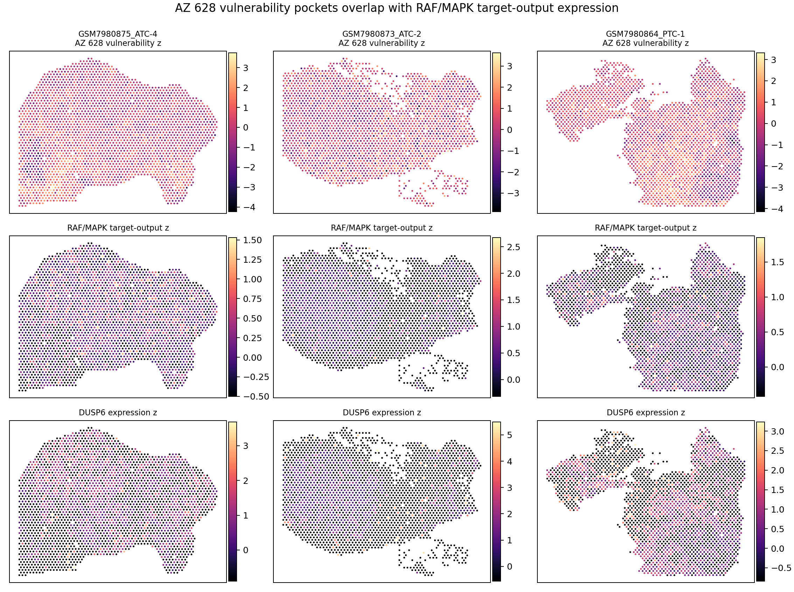

{kind=link}
01What Changed
The strongest new use case is a target-aware spatial triage layer: some drugs show target-program or hotspot enrichment, while AZ 628 shows stronger overlap with DM1-like / low-differentiation tumor state than with bulk RAF/MAPK target-gene expression itself.
| Layer | Best current readout | Interpretation |
|---|---|---|
| Target-program overlap | Imatinib, RBC8, Fedratinib, Romidepsin, ARV-825 | Use as exploratory target-aware drug hypothesis signals, not retained clinical candidates. |
| Cell-state overlap | AZ 628 with DM1-like / low TDS / low RAI state | Most coherent with the thyroid dedifferentiation story and previous strict candidate filtering. |
| Hotspot enrichment | Imatinib ABL/KIT/PDGFR, RBC8 RAL/RAS, Fedratinib JAK/STAT | Worth manual annotation review and target curation before biological claims. |
02What To Click





03Target Overlap
| Drug | Target program | Genes present | Median rho | Hotspot d | Use |
|---|---|---|---|---|---|
| RBC8 | RAL/RAS effector | KRAS, NRAS, HRAS | 0.221 | 0.287 | Exploratory target-overlap signal; not retained by strict reliability filters. |
| Fedratinib | JAK/STAT inflammatory | JAK1, HLA-DRA, CD74 | 0.105 | 0.269 | Target-aware immune/JAK hypothesis; needs annotation and confounder review. |
| Imatinib | ABL/KIT/PDGFR kinase | KIT, PDGFRA, PDGFRB, DDR1, DDR2 | 0.100 | 0.478 | Strong hotspot enrichment; manual target curation required. |
| Romidepsin | HDAC / epigenetic-immune | HDAC1, MYC, CDKN1A, HLA-DRA, CD74 | 0.096 | 0.213 | Potential epigenetic-state overlap, not a treatment claim. |
| ARV-825 | BET/MYC dependency | MYC, CDK9, CCND1 | 0.082 | 0.121 | Exploratory transcriptional-dependency signal. |
04Cell-State Overlap
| Drug | State association | Median rho | Hotspot d | Interpretation |
|---|---|---|---|---|
| AZ 628 | Lower thyroid differentiation state | -0.388 | -0.843 | High predicted vulnerability aligns with dedifferentiated spatial state. |
| AZ 628 | Lower RAI/differentiation | -0.349 | -0.847 | Coherent with MAPK/dedifferentiation biology, still hypothesis-only. |
| AZ 628 | Higher DM1-like state | 0.349 | 0.847 | Most paper-relevant overlap for DM1 spatial application. |
| ITD-1 | Higher DM1-like and lower differentiation | 0.332 / -0.344 | 0.651 / -0.636 | Interesting but not retained by reliability filters. |
| Romidepsin | Epithelial/tumor-rich and hypoxia proxy | 0.288 / 0.279 | 0.445 / 0.375 | Needs tumor purity and hypoxia confounder scrutiny. |
05AZ 628 Interpretation
Important split: AZ 628 remains the strict retained exemplar from the earlier validation filters, but this target-overlap layer says its strongest spatial association is with DM1-like / low-differentiation state, not simple positive correlation with RAF/MAPK target-gene expression. That is scientifically useful because it makes the hypothesis more state-specific and less like a naive target-expression claim.
The next validation should therefore compare AZ 628 high-score and low-score regions for DM1/TDS/RAI state markers plus MAPK pathway protein readouts such as pERK, rather than claiming that spot-level BRAF expression alone explains vulnerability.
06Evidence Matrix
Candidate classification now separates one validation lead from exploratory mechanisms: AZ 628 is advance_state_driven_validation; RBC8, Romidepsin, JAK3_7406, Imatinib, Fedratinib, BAY-HDAC11_2, and ARV-825 are target-anchored exploratory; ITD-1 and TC-A-2317 are state-overlap exploratory.
| Class | Drugs | Use |
|---|---|---|
| advance_state_driven_validation | AZ 628 | Primary wet-lab and spatial validation exemplar. |
| target_anchored_exploratory | RBC8, Romidepsin, JAK3_7406, Imatinib, Fedratinib, BAY-HDAC11_2, ARV-825 | Mechanism follow-up only after target annotation and confounder review. |
| state_overlap_exploratory | ITD-1, TC-A-2317, A12B4C3, DMPS | Useful for state biology and attrition, not immediate drug claims. |
| hold_or_negative_control | Other pilot drugs | Use as conservative negative-control or missing-target-annotation examples. |
07Files
| Artifact | Path |
|---|---|
| Target signature summary | project/spatial_drug_vulnerability/results/tables/drug_target_signature_overlap_summary.tsv |
| Gene-level summary | project/spatial_drug_vulnerability/results/tables/drug_target_gene_overlap_summary.tsv |
| Cell-state summary | project/spatial_drug_vulnerability/results/tables/drug_celltype_state_overlap_summary.tsv |
| Hotspot target enrichment | project/spatial_drug_vulnerability/results/tables/drug_hotspot_target_enrichment_summary.tsv |
| Evidence matrix | project/spatial_drug_vulnerability/results/tables/drug_target_state_evidence_matrix.tsv |
| Candidate classes | project/spatial_drug_vulnerability/results/tables/drug_application_candidate_classes.tsv |
| Markdown report | project/spatial_drug_vulnerability/results/reports/SPATIAL_DRUG_TARGET_CELLTYPE_OVERLAP_REPORT.md |
| Evidence matrix report | project/spatial_drug_vulnerability/results/reports/DRUG_TARGET_STATE_EVIDENCE_MATRIX_REPORT.md |
08Claim Boundary
Allowed: target-aware hypothesis generation, spatial co-localization analysis, experimental prioritization, and validation roadmap design.
Not allowed: clinical treatment recommendation, true measured IC50 per spot, patient selection, or causal target-dependency claim without perturbation validation.